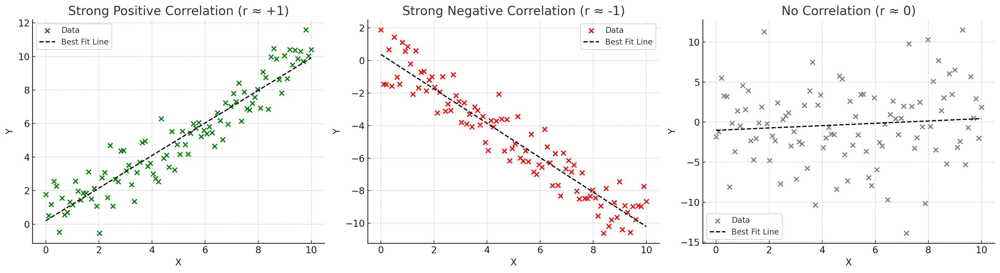

Vector geometry in \(\mathbb{R}^n\) and correlation coefficients
Angles
The angle \(0° \leq \theta \leq 180°\) between nonzero 2-vectors a = \((a_1, a_2)\) and b = \((b_1, b_2)\) satisfies
The angle \(0° \leq \theta \leq 180°\) between two nonzero 3-vectors a = \((a_1, a_2, a_3)\) and b = \((b_1, b_2, b_3)\) satisfies
The preceding in \(\mathbb{R}^2\) and \(\mathbb{R}^3\) motivates how to define appropriate concepts with \(n\)-vectors for any \(n\).
Consider \(n\)-vectors x = \(\begin{bmatrix} x_1 \\ x_2 \\ \vdots \\ x_n \end{bmatrix}\) and y = \(\begin{bmatrix} y_1 \\ y_2 \\ \vdots \\ y_n \end{bmatrix}\).
(i) The dot product of x and y is defined to be the scalar
The dot product is only defined if the two vectors are \(n\)-vectors for the same value of \(n\).
(ii) The angle \(\theta\) between two nonzero \(n\)-vectors x, y is defined by the formula
with \(0° \leq \theta \leq 180°\). For emphasis: x and y must be nonzero \(n\)-vectors for a common \(n\).
(iii) When \(x \cdot y = 0\) (same as \(\theta = 90°\) if x, y ≠ 0), we say x and y are perpendicular; the word orthogonal is often used for this ("orthogōnios" is ancient Greek for "right-angled"), though only rarely at the U.S. Supreme Court.
Always remember that the dot product of vectors is a scalar (it is not a vector).
The notion of angle is a definition in \(\mathbb{R}^n\) for general \(n\): it is motivated by the case when \(n = 3\), but for general \(n\) there is nothing to "physically justify". The real content making this definition for general \(n\) is that (as you will learn with experience) this notion of angle behaves like our visual experience in \(\mathbb{R}^2\) and \(\mathbb{R}^3\) and so provides useful visual guidance with \(n\)-vectors for any \(n\).
Whenever we speak of an angle between two lines through the origin, there is always an ambiguity (when they're not perpendicular) of whether we want the acute angle between them or the (supplementary) obtuse angle between them. This corresponds to the fact that when we set it up as a vector problem, we have to choose a direction along each line (coming out of the intersection point). Depending on the choice, we will get the acute or the obtuse angle.
Properties of dot products
For any \(n\)-vectors v, w, w\(_1\), and w\(_2\), the following hold:
(i) \(v \cdot w = w \cdot v\),
(ii) \(v \cdot v = \|v\|^2\),
(iii) \(v \cdot (cw) = c(v \cdot w)\) for any scalar \(c\), and \(v \cdot (w_1 + w_2) = v \cdot w_1 + v \cdot w_2\).
(iii′) Combining both rules in (iii), for any scalars \(c_1\), \(c_2\) we have
Pythagorean Theorem in \(\mathbb{R}^n\) and the Cauchy–Schwarz Inequality
As an application of the dot product rules, we can establish a version of the Pythagorean Theorem for \(n\)-vectors with any \(n\) (not just \(n = 2\)) and we can show that the subtlety lurking in the definition of "angle" between \(n\)-vectors is really not a problem at all.
Theorem (Pythagoras). If \(n\)-vectors v\(_1\) and v\(_2\) are nonzero and perpendicular (i.e., at an angle of \(90°\)) then
Proof. Expand the left side as a dot product:
We've used the rules for dot products at each step to expand. But the common value \(v_1 \cdot v_2\) and \(v_2 \cdot v_1\) is 0 because v\(_1\) and v\(_2\) are assumed to be perpendicular (which means by definition that their dot product equals 0). Thus, the right side equals \(v_1 \cdot v_1 + v_2 \cdot v_2 = \|v_1\|^2 + \|v_2\|^2\), as we wanted. \(\square\)
The motivation for our definitions of perpendicularity and more generally angle between vectors in \(\mathbb{R}^n\) and length of vectors in \(\mathbb{R}^n\) for general \(n\) (especially \(n > 3\)) came from our knowledge of how things work in \(\mathbb{R}^2\) based on knowing the Pythagorean Theorem in plane geometry. Making up definitions of words cannot ever replace the work involved in proving a real theorem.
Since we now have several good properties of dot products in hand, we can establish a fact that is needed to confirm that our definition of "angle" between nonzero \(n\)-vectors makes sense for any \(n\):
Theorem (Cauchy–Schwarz Inequality). For \(n\)-vectors v, w, we have
(or equivalently the absolute value \(|v \cdot w|\) is at most \(\|v\| \|w\|\)). Moreover, one of the inequalities is an equality precisely when one of v or w is a scalar multiple of the other.
Proof. If v = 0 or w = 0 then everything is clear (note that 0 is a scalar multiple of any \(n\)-vector: multiply it by the scalar 0), so now we assume v, w ≠ 0. The idea of the proof is to explore how the length of v + \(x\)w depends on \(x\). This is most conveniently done by analyzing the squared-length, which is a dot product:
Using the linearity properties of dot products, we have
But \(w \cdot v = v \cdot w\), so combining the middle two terms yields:
The squared length of a vector is always ≥ 0, and it equals 0 precisely when the vector equals 0. But the vector v + \(x\)w equals 0 for some value \(x = c\) precisely when v = \(-c\)w, which is to say v is a scalar multiple of w, and that is the same as w being a scalar multiple of v (since the scalar multiplier can be brought to the other side as its reciprocal as long as the scalar cannot be 0, and indeed such a scalar cannot be 0 since we have arranged that v, w ≠ 0). So we just need to analyze what it means that the quadratic polynomial in \(x\) given by
is always non-negative, and determine when this polynomial does actually attain the value 0 for some value of \(x\).
Let's review when a quadratic polynomial \(ax^2 + bx + c\) with positive leading coefficient (such as \(a = \|w\|^2\) for \(q(x)\) above) is ≥ 0 everywhere. This happens precisely when its concave-up parabolic graph lies entirely on one side of the \(x\)-axis (possibly touching the \(x\)-axis at one point), which is exactly the situation that the graph does not cross the \(x\)-axis at two different points. This is exactly the situation when the output of the quadratic formula does not yield two different real numbers. The opposite case of having two different real roots occurs exactly when the "\(b^2 - 4ac\)" part of the quadratic formula inside the square-root is > 0, so in our situation we must have the exactly opposite situation: \(b^2 - 4ac \leq 0\), with equality happening precisely when there is a real root.
Applying the preceding review with \(a = \|w\|^2\), \(b = 2(v \cdot w)\), \(c = \|v\|^2\) for \(q(x)\), we get
with equality happening exactly when v and w are scalar multiples of each other. Bringing the second term on the left over to the other side, we conclude that
with equality precisely when v and w are scalar multiples of each other. Dividing each side by 4, this is the same as the inequality
so taking square roots of both sides gives what we want. \(\square\)
The correlation coefficient
Given data points \((x_1, y_1)\), . . . , \((x_n, y_n)\), it is often useful to seek a line which gives a "best fit" to this collection of points.
The problem of finding a "best fit" line to some data is called linear regression. But at a more basic level we may seek a measure of the extent to which it is reasonable to try to find a line that could be regarded as a good fit to the data (setting aside what that specific line may be). There is a widely used measure of whether one should seek such a line: this measure is called the correlation coefficient of the data points.
Consider \(n\) data points \((x_1, y_1)\), \((x_2, y_2)\), . . . , \((x_n, y_n)\) in \(\mathbb{R}^2\). Assume they don't all lie on a common vertical line nor on a common horizontal line (i.e., the \(x_i\)'s are not all equal to each other, and the \(y_i\)'s are not all equal to each other, so in particular X, Y ≠ 0).
In the above setup, assume furthermore that the averages \(\bar{x} = \frac{1}{n}\sum x_i\) and \(\bar{y} = \frac{1}{n}\sum y_i\) of the \(x\)-coordinates and of the \(y\)-coordinates both equal 0. The correlation coefficient \(r\) between the \(x_i\)'s and \(y_i\)'s is defined to be the cosine of the angle between X and Y, or equivalently between the unit vectors \(\frac{X}{\|X\|}\) and \(\frac{Y}{\|Y\|}\):

Intuition: This definition makes perfect geometric sense. When the data points \((x_i, y_i)\) are centered (so their averages are 0), we can think of X and Y as vectors in \(\mathbb{R}^n\) representing the \(x\)-coordinates and \(y\)-coordinates respectively.
The correlation coefficient \(r\) measures how well the data points align along a line through the origin. When \(r = 1\), the vectors X and Y point in the same direction, meaning the data points lie perfectly on a line with positive slope. When \(r = -1\), the vectors point in opposite directions, meaning the data points lie perfectly on a line with negative slope. When \(r = 0\), the vectors are perpendicular, meaning there's no linear relationship between the variables.
You may be bothered by the assumption that the averages \(\bar{x}\) and \(\bar{y}\) of the coordinates of the data both equal 0, since in practice it is rarely satisfied. What is done in real-world problems is that the data is recentered: we replace \(x_i\) with \(\hat{x}_i = x_i - \bar{x}\) and replacing \(y_i\) with \(\hat{y}_i = y_i - \bar{y}\). Such subtraction of the averages makes "center of mass" move to \((0, 0)\) (i.e., \(\hat{\bar{x}}, \hat{\bar{y}} = 0\)).
Often people work with \(r^2\), which is always non-negative. This is
it is near 0 when there is little correlation, and near 1 when there's a strong linear relationship (without specifying the sign of the slope: \(r\) may be near 1 or near \(-1\)).
Don't confuse the value of \(r\) with the slope of a "best-fit line"! The nearness of \(r^2\) to 1 (or of \(r\) to \(\pm 1\)) is a measure of quality of fit. The actual slope of the best-fit line (which could be any real number at all) has nothing whatsoever to do with the value of \(r\) (which is always between \(-1\) and 1).
Correlation coefficients go hand in hand with linear regression (finding a "best fit" line for data) and help one to understand how meaningful the results of a linear regression are.
Note: Let's see why the correlation coefficient equals 1 precisely when the points \((x_i, y_i)\) all lie exactly on a line \(y = mx\) whose slope \(m\) is positive. We assume as always that the data doesn't all lie on a common vertical line or a common horizontal line, and that the averages \(\bar{x}\) and \(\bar{y}\) equal 0. By then replacing \(y_i\) with \(-y_i\) everywhere, it would follow that the correlation coefficient equals \(-1\) precisely when the points \((x_i, y_i)\) all lie exactly on a line \(y = mx\) whose slope \(m\) is negative.
Note that X, Y ≠ 0 since we assumed the data points aren't on a common horizontal line and aren't on a common vertical line. We want to show that the correlation coefficient is 1 precisely when Y = \(m\)X for some \(m > 0\).
But the correlation coefficient is the cosine of the angle between the nonzero vectors X and Y, so the correlation coefficient is equal to 1 precisely when the angle between X and Y is \(0°\). The angle \(\theta\) between the (nonzero) vectors X and Y is \(0°\) precisely when Y = \(m\)X for some \(m > 0\).